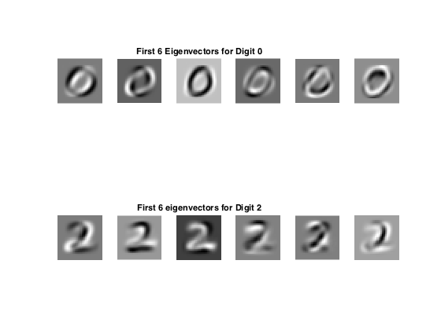
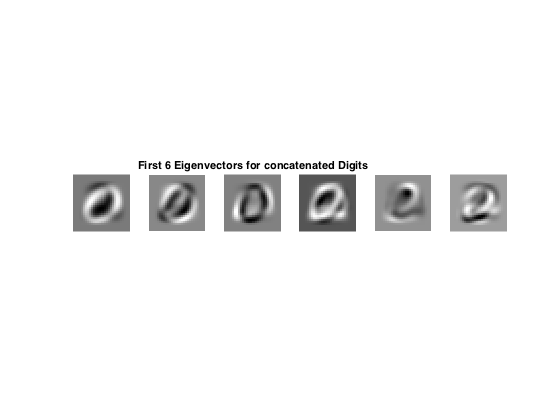
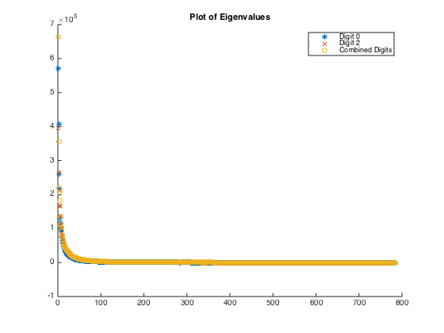
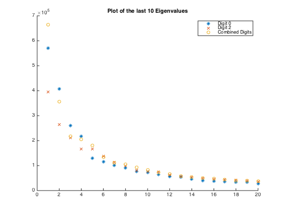

Contents
Read image data in from files
clear; digit0 = readData('hw3-data/digit0/'); digit2 = readData('hw3-data/digit2/');
Compute Covariance Matrix, Eigenvalues, and Eigenvectors
I calculate the covariance matrix the same way that we have in question 4b). Please look at the function compute.m to see exactly how this is computed.
[mean0, cov0, eigVec0, eigVal0] = compute(digit0); [mean2, cov2, eigVec2, eigVal2] = compute(digit2);
Part B
figure; subplot(2,6,1); imshow(reshape(eigVec0(:,1),28,28), []); subplot(2,6,2); imshow(reshape(eigVec0(:,2),28,28), []); subplot(2,6,3); imshow(reshape(eigVec0(:,3),28,28), []); title('First 6 Eigenvectors for Digit 0'); subplot(2,6,4); imshow(reshape(eigVec0(:,4),28,28), []); subplot(2,6,5); imshow(reshape(eigVec0(:,5),28,28), []); subplot(2,6,6); imshow(reshape(eigVec0(:,6),28,28), []); subplot(2,6,7); imshow(reshape(eigVec2(:,1),28,28), []); subplot(2,6,8); imshow(reshape(eigVec2(:,2),28,28), []); subplot(2,6,9); imshow(reshape(eigVec2(:,3),28,28), []); title('First 6 eigenvectors for Digit 2'); subplot(2,6,10); imshow(reshape(eigVec2(:,4),28,28), []); subplot(2,6,11); imshow(reshape(eigVec2(:,5),28,28), []); subplot(2,6,12); imshow(reshape(eigVec2(:,6),28,28), []);
Part C
It seems that these eigenvectors are a mix of the eigenvectors of digit 0 and digit 2. You can clearly see both O's and 2's showing themselves in the eigenvectors of the mix of the digits. Each 0 and 2 showing itself in these eigenvectors are distorted where the eigenvectors of 0 and 2 interest. This makes sense because at those pixel locations the the individual covariance matrices of digits 0 and 2 both are non-zero.
figure;
digitConcat = [digit0 digit2];
[meanC, covC, eigVecC, eigValC] = compute(digitConcat);
subplot(1,6,1); imshow(reshape(eigVecC(:,1),28,28), []);
subplot(1,6,2); imshow(reshape(eigVecC(:,2),28,28), []);
subplot(1,6,3); imshow(reshape(eigVecC(:,3),28,28), []);
title('First 6 Eigenvectors for concatenated Digits');
subplot(1,6,4); imshow(reshape(eigVecC(:,4),28,28), []);
subplot(1,6,5); imshow(reshape(eigVecC(:,5),28,28), []);
subplot(1,6,6); imshow(reshape(eigVecC(:,6),28,28), []);
 Part D
We can see that the "dimensionality" of the data is much less than 784 implied by the 784 eigenvectors. We clearly see that not all of the eigenvalues are the same value. In fact, the first fifty or so eigenvalues are orders of magnitude larger than the remaining 700+. Because the eigenvaules roughly dictate how influential each eigenvector is, those 50 eigenvalues, and corresponding eigenvectors, essentially dictate the "effective" dimensionality of the problem. These 50 eigenvalues, and corresponding eigenvectors, capture the majority of the data stored by the covariance matrices of the images of digits 0 and 2.
This observation is a very convenient one when approaching feature selection for the recognition of digits. It essentially shows us that we do not need to work with each and every eigenvector and eigenvalue. Only finding the features parallel to the eigenvectors with the highest eigenvalues will be sufficient in recognizing digits. They will be sufficient in differentiating between digits. Of course, this sacrifices accuracy, but only slightly. The benefits incurred by this much smaller problem include a large computational speedup and reduction of storage necessary.
lambda0 = diag(eigVal0); lambda2 = diag(eigVal2); lambdaC = diag(eigValC); figure; hold; plot(1:784, real(lambda0), '*'); plot(1:784, real(lambda2), 'x'); plot(1:784, real(lambdaC), 'o'); title('Plot of Eigenvalues'); legend('Digit 0', 'Digit 2', 'Combined Digits', 'Location', 'NorthEast'); figure;hold; plot(1:20, real(lambda0(1:20)), '*'); plot(1:20, real(lambda2(1:20)), 'x'); plot(1:20, real(lambdaC(1:20)), 'o'); title('Plot of the last 10 Eigenvalues'); legend('Digit 0', 'Digit 2', 'Combined Digits', 'Location', 'NorthEast');
Current plot held Current plot held 